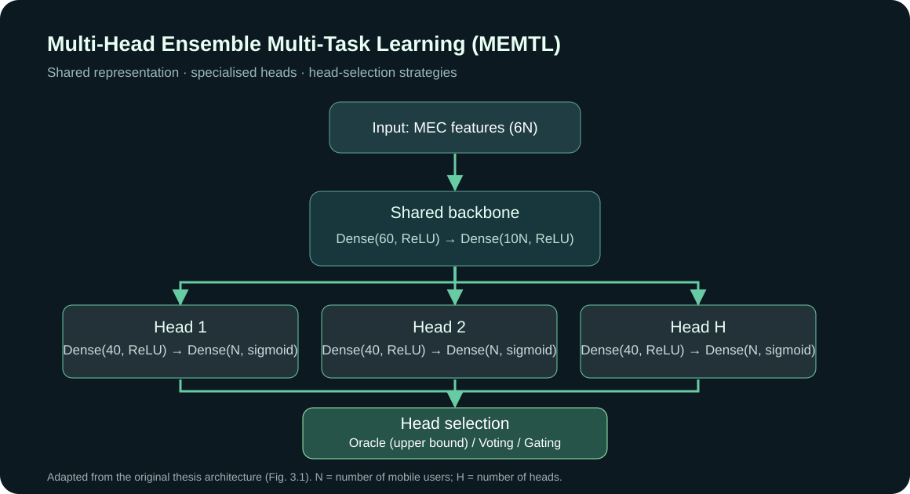

Multi-Head Ensemble Learning for Computation Offloading in Edge Computing
Research on Computation Offloading Optimization Based on Multi-Task Learning in Multi-Access Edge Computing.
Mengxuan Shen · Xi'an Jiaotong-Liverpool University · Supervisor: Dr. Along Jin
Research question
How can a shared-backbone, multi-head multi-task neural network learn offloading decisions for heterogeneous mobile edge-computing tasks, balancing the need for decision accuracy with practical inference constraints?
What I built
MEMTL architecture
A TensorFlow/Keras model using a shared feature extractor and several prediction heads trained on bootstrapped subsets, extending a single-head MTL-FNN baseline.
Training and evaluation
Custom loss terms for probability error, false positives and offloading-volume consistency, with staged head training and workstation TensorFlow/XLA latency measurements.
Comparative experiments
Evaluated exact decision-vector accuracy, mean squared error, offloading costs and latency on synthetic MEC data with 2–8 users.
Deployment-gap study
Compared oracle-assisted selection against label-free approaches, including majority voting and gating-based head selection.
Model architecture

Figure 3.1, extracted from the submitted thesis. Original model diagram.
Selected findings
- At the 2-user scale, the 5-head MEMTL-Oracle achieves 94.96% exact decision-vector accuracy versus 93.88% for the single-head MTL-FNN.
- Under oracle-assisted selection, exact decision accuracy and mean squared error improve across the evaluated user scales.
- The normalized offloading-cost result is not uniformly better: the 5-user and 7-user datasets have higher costs for MEMTL-Oracle.
- Label-free selection does not fully reach the oracle-assisted upper bound, leaving an important practical challenge for deployment.
Methods and tools
Python · TensorFlow / Keras · NumPy · Pandas · scikit-learn · Multi-Task Learning · Ensemble Learning · MEC Optimization · XLA
← Return to featured projects